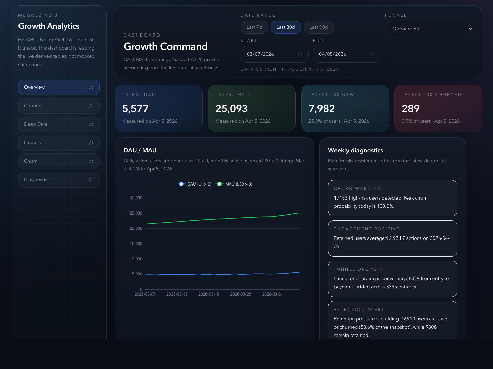
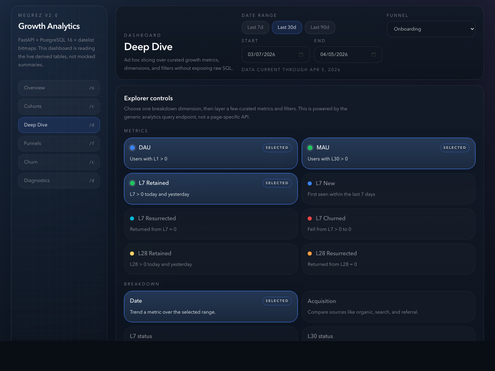
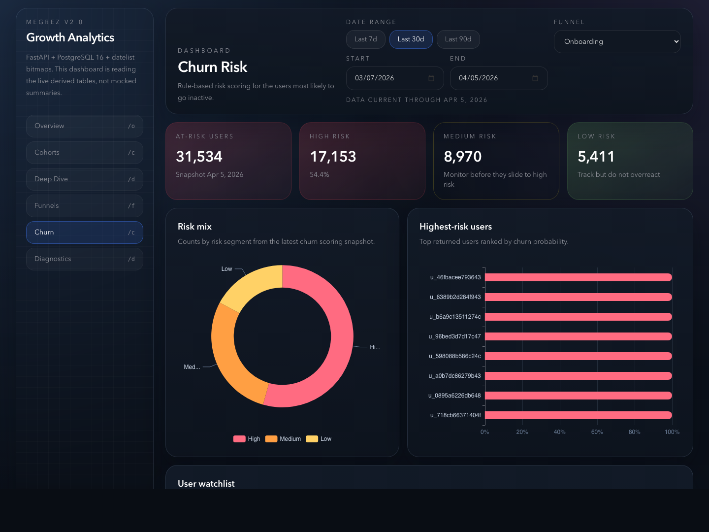

{kind=link}
Meta-scale lifecycle thinking
Megrez is informed by experience building growth accounting and L-ness style lifecycle metrics from scratch to support Instagram growth from 300M to 2B MAU.
Lifecycle analytics for mobile product teams
Megrez makes L7, L30, and L90 growth accounting explicit across new, retained, resurrected, churned, and stale users so teams can see the quality of growth, not just activity.
Built from experience scaling Instagram growth at Meta and later building churn prediction systems at a major consumer tech company.

Why Megrez exists
Megrez is informed by experience building growth accounting and L-ness style lifecycle metrics from scratch to support Instagram growth from 300M to 2B MAU.
The product is also shaped by later work building churn prediction systems at a major consumer tech company, with a focus on identifying users most likely to disengage.
Megrez brings that level of lifecycle clarity to teams that need a more explicit read on retention, resurrection, and churn without building an internal analytics stack from scratch.
The problem
Teams can see traffic and activity, but still cannot tell whether growth is healthy, durable, or just backfilling churn.
Standard retention views rarely make it easy to separate new users from resurrected users or distinguish churn from staleness.
Product and growth teams end up guessing which funnel or onboarding changes are actually improving the business.
The product
Instead of a single vague retention number, Megrez shows how many users are new, retained, resurrected, churned, and stale across multiple L-windows. That gives teams a clearer operating picture of whether product changes are improving lifecycle health.
Track new, retained, resurrected, churned, and stale users across L7, L30, and L90 with time-series views that show how lifecycle quality moves.
Keep the activity metrics teams already use, but connect them back to lifecycle state so they carry real operational meaning.
Connect onboarding performance, lifecycle movement, and churn risk inside one system instead of stitching dashboards together.
Megrez is designed to support real product and growth decisions, with founder-led onboarding for early teams.
See the product
These are real screenshots from the current Megrez dashboard, not marketing mockups.


Best fit
What to do next
The early design partner motion is intentionally hands-on. We help map events, stand up the system, and turn the outputs into real growth decisions quickly. This is built for teams that want stronger lifecycle visibility without rebuilding Meta-scale or big-company internal analytics capability themselves.
Best fit: mobile product teams with real event data and an active retention problem.
Early program
Megrez is currently available through a limited design partner program for a small number of mobile app teams. The goal is to stand up useful lifecycle visibility quickly and turn it into concrete product decisions.
Start with a paid pilot rather than a self-serve trial. Early teams buy clarity and implementation support, not just another dashboard.
Typical pilot range: $1.5k setup + $1k to $2k/month
FAQ
Megrez is focused on explicit L-window growth accounting and lifecycle clarity. The job is not just to display activity. It is to show whether growth is healthy.
No. Early teams can use Megrez alongside the analytics tools they already have.
Not yet. Early customers get hands-on onboarding so the output becomes useful quickly and does not die in setup.
Get in touch
If your team can already measure activity but still cannot clearly explain retention, resurrection, and churn, Megrez is built for that gap with experience shaped by real consumer scale.
{kind=link}
{kind=link}